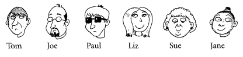
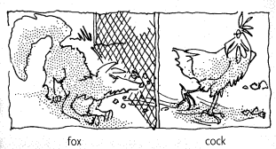
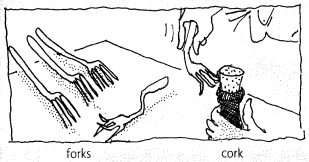
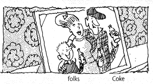

ASSUMPTION COLLEGE MATHAYOM
PRONUNCIATION
SOUNDS & SYMBOLS
THE PHONEMIC CODE
ENGLISH IS A LIE
Why use symbols?
English spelling is unreliable.
One letter has many sounds.
The Chart is your map.
CONSONANTS REFERENCE
| UNVOICED (Quiet) | /p/ | /t/ | /k/ | /f/ | /s/ | /θ/ |
|---|---|---|---|---|---|---|
| VOICED (Loud) | /b/ | /d/ | /ɡ/ | /v/ | /z/ | /ð/ |
| OTHER | /ʃ/ | /tʃ/ | /ʒ/ | /dʒ/ | /h/ | /l/ |
| OTHER | /r/ | /w/ | /m/ | /n/ | /ŋ/ | /j/ |
VOWELS & DIPHTHONGS
| /ɪ/ | /iː/ (E) | /uː/ (U) | /ʊ/ | /eɪ/ (A) |
| /ɪə/ | /əʊ/ (O) | /ə/ | /ɜː/ | /ɔː/ |
| /ɒ/ | /aɪ/ (I) | /eə/ | /au/ | /e/ |
| /æ/ | /ɑː/ | /ʌ/ | /ɔɪ/ | /ʊə/ |
TRANSCRIPTION CHALLENGE
TASK 1
LISTEN & TRANSCRIBE
|  |
| ||||||||||
ANSWERS: 1-4
1. Tom likes writing poetry.
2. Jane's got a friendly brown pet cat.
3. Sue was fast asleep when the burglars came.
4. Joe bought a bottle of Hungarian wine last night.
ANSWERS: 5-8
5. Liz wants to be rich and famous one day.
6. Paul's a wealthy young tourist.
7. Tom and Liz are good at Spanish.
8. Joe works in a noisy garage.
THE VOWEL TRAP
CONTRAST: /ɒ/ vs /ɔː/ vs /əʊ/
|  /ɒ/ |  /ɔː/ |  /əʊ/ |
TASK 2: LISTEN & TICK
| # | /ɒ/ | /ɔː/ | /əʊ/ |
|---|---|---|---|
| 1 | ✓ | ||
| ... Listen and Mark ... | |||
KEY: 1-3
1. clock (/ɒ/)
2. sport (/ɔː/)
3. boat (/əʊ/)
KEY: 4-6
4. saw (/ɔː/)
5. got (/ɒ/)
6. joke (/əʊ/)
KEY: 7-8
7. box (/ɒ/)
8. shown (/əʊ/)
KEY: 9-10
9. born (/ɔː/)
10. coat (/əʊ/)
CATEGORIZATION
TASK 3: WORD SORT
| walk, wrong, won't, gone, ago, novel, water, all, quarrel, want, only, door, moment, thought, phone, although | ||
| /ɒ/ | /ɔː/ | /əʊ/ |
|---|---|---|
| ? | walk | ? |
RESULTS: /ɒ/
/ɒ/: quarrel, wrong
/ɒ/: novel, want, gone
RESULTS: /ɔː/
/ɔː/: walk, thought, water
/ɔː/: all, door
RESULTS: /əʊ/
/əʊ/: ago, moment, won't
/əʊ/: only, phone, although
GET READY...
THE FINAL CHALLENGE
THE SECRET CODE SWAP
1. WRITE: Create a secret sentence about yourself.
2. ENCODE: Translate it into phonemic symbols.
3. SWAP: Exchange codes with your partner.
4. SPEAK: Read and say their sentence aloud!